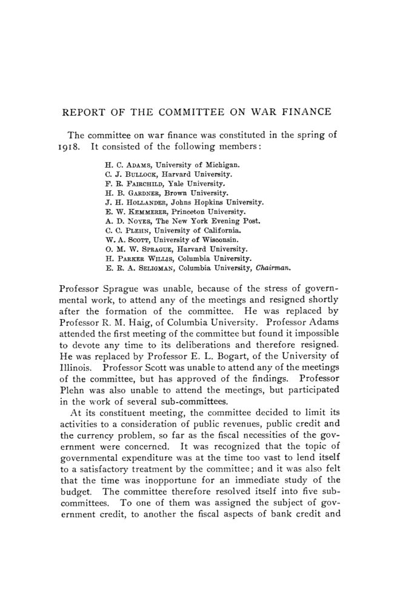

Finanças de guerra, 1918: o imposto sobre lucros e as 402 empresas
Leitura: 7 min
O capítulo central do relatório de 1919 examina os impostos de renda e sobre lucros extraordinários e, com dados de 402 empresas, mostra que lucro contábil de guerra não é lucro realizado.


No ano fiscal de 1918, os impostos federais sobre a renda e sobre os lucros extraordinários renderam cerca de US$ 2,84 bilhões, mais de 73% de toda a receita tributária. Para a Comissão de Finanças de Guerra, eram o esteio das finanças da guerra. O capítulo que abre o relatório, preparado pela subcomissão de C. J. Bullock, de Harvard, pergunta a que custo.
O relatório saiu em março de 1919, mas a análise foi escrita antes do armistício e revista depois. Por isso, ele faz duas coisas: avalia como os impostos funcionaram na guerra e pergunta o que fazer com eles na transição para a paz.
Como era o imposto de renda de 1917?
A lei de 3 de outubro de 1917 sobrepôs dois impostos. O imposto ordinário tinha alíquota normal de 2% e uma sobretaxa progressiva de 1% a 13% sobre rendas acima de US$ 20.000; o de guerra, outra alíquota normal de 2% e sobretaxa de 1% a 50% acima de US$ 5.000. As isenções para pequenas rendas também diferiam. A comissão aprova a redução das isenções de US$ 3.000 e US$ 4.000, para solteiros e casados, a US$ 1.000 e US$ 2.000, e pede que não voltem a subir depois da guerra, para que o dever de contribuir não recaia só sobre uma pequena fração da população.
As sobretaxas chegavam a 63% sobre a parcela de renda acima de US$ 5 milhões. Mas a isenção dos juros de títulos federais, estaduais e municipais fazia o imposto depender não só do tamanho da renda, mas do tipo de investimento, resultado que o relatório chama de farsesco. Um dos casos relatados: um contribuinte que vinha investindo havia anos em jazidas minerais embolsou um lucro de vários milhões no início de 1917 e, sem saber que lei viria, o reinvestiu em novas propriedades. No começo de 1918, estava sem dinheiro e com uma conta de impostos de vários milhões. Restava-lhe vender às pressas, com grande perda, ou depender da clemência do governo.
Por que o imposto sobre lucros pesou mais nos pequenos?
O imposto sobre lucros extraordinários incidia sobre o lucro acima de uma dedução, com alíquotas que variavam conforme a razão entre o lucro tributável e o capital investido. O resultado, diz a comissão, foi o inverso do que o Congresso provavelmente pretendia. Estatísticas do Tesouro sobre 7.899 empresas mostraram que essa razão, e portanto a alíquota, era aproximadamente inversa ao tamanho da empresa, e o imposto não guardava relação necessária com os lucros de guerra.
O Tesouro propôs então um sistema alternativo: calcular também um imposto sobre lucros de guerra, no modelo britânico, pela diferença em relação à média anterior à guerra, e cobrar o maior dos dois. A comissão admite que isso reduziria casos erráticos, mas complicaria a lei e encareceria a administração.
O que é capital investido?
A maior dificuldade, diz o relatório, estava em definir o capital investido. Títulos isentos não contavam como capital, o que punia os bancos que viviam de negociá-los. O capital emprestado também não contava, mas as empresas não podiam deduzir todos os juros pagos; o Tesouro, numa decisão talvez sem base legal, deixou incluir parte da dívida, e algumas empresas acabaram com uma dedução maior do que teriam se pudessem abater os juros inteiros. Ativos comprados com ações antes de 1914 e o fundo de comércio, limitado a 20% do capital, geraram desigualdades entre empresas com ativos idênticos.
Em vários desses pontos, o Tesouro resolveu o problema por interpretação. A comissão reconhece que, sem a discrição da Receita, levada ao limite e talvez além dele, os resultados teriam sido muito piores; mas chama o regime de tributação arbitrária e discricionária, muito objetável em tempos normais e justificável só como medida de guerra. O custo de cumprir a lei, com contadores, advogados e funcionários extras, era em muitos casos excessivo, ainda que dedutível como despesa.
O que mostraram as 402 empresas?
Para medir os efeitos industriais, a comissão examinou 402 empresas, quase todas industriais, com capital médio acima de US$ 15 milhões, entre 1914 e 1918. Chamou de “expandidas” as que aumentaram ativos e passivos em mais de 20% no período. Surpreendeu-se com o número das que não se expandiram: 148, cerca de 37%. As outras 254 se expandiram. Cada grupo foi dividido em três classes, conforme a situação financeira em 1918.
Entre as expandidas, a comparação se inverteu. Em 1914, as que formariam a classe mais sólida tinham dívidas de quase 70% dos ativos líquidos; em 1918, pouco mais de um terço. A classe intermediária teve os maiores lucros, mas eles estavam presos em fábricas e estoques e somados a muito dinheiro emprestado. A classe que mais se expandiu passou de dívidas abaixo da metade dos ativos líquidos para 60%. A comissão verificou que a diferença não vinha da política de dividendos: as três classes distribuíram perto de metade dos lucros.
“Lucros contábeis, em tempos de expansão e inflação, não são o mesmo que lucros realizados.” (“book profits, in times of expansion and inflation, are not the same as realized profits.”)
A conclusão é que fábricas e estoques comprados a preços de guerra podem encolher de valor na paz, e só anos de bons lucros, pouco tributados, permitirão às empresas mais expandidas pagar suas dívidas e absorver a queda. A comissão adverte que os impostos podem estar recaindo sobre renda que nunca será realizada.
“…e sobre lucro que ainda se transformará em prejuízo.” (“…and upon profit that will yet turn into loss.”)
O que a comissão recomendava?
Para o imposto de renda: uma só alíquota normal, com a progressividade só na sobretaxa; dedução de prejuízos em qualquer operação com fim de lucro; fim do limite à dedução de juros pelas empresas; amortização de fábricas construídas na guerra e provisão para a queda dos estoques; e fim da isenção dos juros de títulos estaduais e municipais. Para o imposto sobre lucros, se continuar: abandonar o aparato atual e cobrar um imposto simples sobre o lucro líquido das empresas. O cidadão comum, diz o relatório, não entende a lei e nem sempre obtém bom conselho de advogados ou contadores.
Na minha leitura
Na minha leitura, o capítulo antecipa um problema que toda tributação de lucros em inflação enfrenta: o lucro contábil mistura ganho real e reavaliação nominal de estoques e ativos. A divisão entre empresas expandidas e não expandidas é uma forma simples de mostrar isso sem modelo: quem converteu lucro em caixa ficou protegido; quem o converteu em capacidade física ficou exposto à queda de preços.
O outro ponto de método é o uso de dados de empresas para testar o efeito de uma lei. O Tesouro já havia mostrado que a alíquota efetiva caía com o tamanho da firma; a comissão acrescenta o balanço, e não só a declaração de renda, como fonte para avaliar se a base tributária era renda de fato.
Glossário
- Imposto sobre lucros extraordinários
- tributo de guerra sobre o lucro acima de uma dedução calculada sobre o capital investido.
- Sobretaxa
- adicional progressivo do imposto de renda sobre as parcelas mais altas de renda.
- Capital investido
- base do imposto sobre lucros: capital aplicado pelos donos, incluídos lucros retidos, sem a valorização dos ativos.
- Ativos de liquidez imediata
- no relatório, estoques, contas a receber, investimentos e caixa.
- Lucro contábil
- resultado registrado nos livros, que pode incluir ganhos ainda não convertidos em dinheiro.
Fontes
- Report of the Committee on War Finance — Comissão de Finanças de Guerra da American Economic Association; subcomissão de impostos de renda e de lucros extraordinários presidida por C. J. Bullock (pp. 1–127). JSTOR · Internet Archive (PDF)
- Edição completa, com os demais artigos: Nº 157 do Arquivo.
Documento em domínio público (EUA, publicado antes de 1931), via JSTOR Early Journal Content e Internet Archive. Resumo e comentário do autor deste site, sem afiliação com a American Economic Association. Encontrou um erro? Escreva: a correção é publicada no próprio texto, com data.
↑ Nº 157 · Finanças de guerra, 1918: impostos, empréstimos e inflação Richmond, 1918: impostos, títulos e inflação em debate →